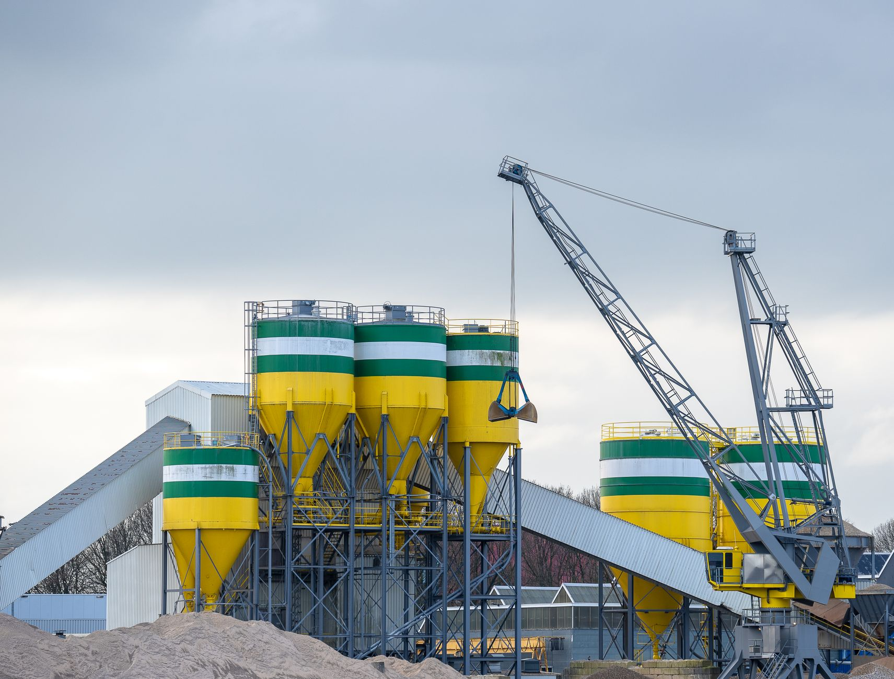

AI 반도체 풀스택 포럼, 소재 빈칸이 관건

전자신문이 보도한 '한국의 반도체산업 발전 전략 포럼'에서 AI 반도체 풀스택 전략이 집중 논의됐다. 풀스택은 팹리스(설계)→파운드리(제조)→OSAT(패키징)→소부장(소재·부품·장비)을 국내에서 수직 통합하는 전략이다.
현재 한국 AI 반도체 풀스택 완성도는 불균형 상태다. 제조(삼성·SK하이닉스)와 패키징(앰코·네패스)은 글로벌 수준이나, 팹리스 분야는 리벨리온·사피온·퓨리오사AI가 성장 중이지만 엔비디아·AMD와 성능 격차가 3~5배다. 불화수소·CMP 슬러리·ALD 전구체 등 핵심 소재의 해외 의존도는 60~80% 수준을 유지하고 있다.
한경협(한국경제인협회)도 AI·반도체 분야 민간 성장 전략을 수립 중이며, R&D 투자 확대와 인력 양성을 중심 의제로 다루고 있다. 2025년 국내 반도체 업계 R&D 지출은 약 27조 원 규모로, 이 중 소재·장비 분야 비중은 15% 미만으로 추정된다.
AI 반도체 풀스택 전략의 맹점은 소재 레이어에 대한 과소 투자다. 한국이 HBM과 파운드리로 글로벌 AI 공급망에서 핵심 위치를 차지하고 있지만, 이를 만드는 소재·장비의 상당 부분을 미국·일본·독일에서 수입한다. 미중 패권 경쟁이 소재·장비 레이어까지 전선을 확장한 지금, 이 구조적 취약성이 언제든 생산 차질로 현실화될 수 있다.
풀스택 전략이 진정한 의미를 갖추려면 팹리스·파운드리·패키징뿐 아니라 소재 국산화율 목표치와 투자 로드맵이 함께 제시돼야 한다. 현재처럼 칩 성능 경쟁에만 집중하면 소재 병목이 전체 풀스택을 흔드는 아킬레스건이 된다.
솔브레인(불화수소·식각액)·동진쎄미켐(PR 재료)·SK머티리얼즈(특수가스) 등 국내 소재 기업이 풀스택 전략 수혜를 가장 크게 받을 잠재력이 있다. 소부장 1700억 지원 확대에 방산·희토류가 새로 편입된 것도 이 흐름의 일환이다.
리벨리온·사피온·퓨리오사AI 등 AI 반도체 팹리스 스타트업도 수혜를 받는다. 정부·민간 투자가 집중되면서 2~3년 내 실질적 제품화 단계 진입이 가능하다. 산업은행의 AI·반도체 스타트업 15곳 육성 프로그램도 이 생태계를 강화한다.
소재·장비 레이어 투자가 계속 뒤처지면 국내 파운드리의 원가 경쟁력이 약해진다. 일본 신에츠·JSR, 미국 엔테그리스 같은 외국 소재사가 국내 반도체 생산의 핵심 목줄을 쥐는 상황이 유지된다.
중소 소부장 기업들은 정부 지원을 받아도 양산 전환에 평균 3~5년이 걸린다. 이 과도기 동안 외산 소재 의존을 줄이지 못하면 정부 지원이 실질적 공급망 개선으로 연결되지 않는 구조가 반복된다.
풀스택 전략을 추진하는 기업과 정책 당국은 소재·장비 레이어의 국산화 목표치와 타임라인을 공개 선언해야 한다. '2030년까지 반도체 공정 소재 자급률 35%' 처럼 수치화된 목표가 있어야 민간 투자가 따라온다.
국내 AI 칩 팹리스가 성장하려면 삼성·TSMC의 MPW(Multi-Project Wafer) 지원을 확대하고, EDA 툴 라이선스 비용 지원 프로그램을 신설해야 한다. 설계 툴 없이는 아무리 인력을 양성해도 결과물이 나오지 않는다.
실제 조달 현장에서는 — 반도체 소재를 공급하는 입장에서 보면, 국산화 선언은 많은데 실제 양산 오더로 이어지는 경우가 아직도 드물다. 고객사의 품질 인증(Qual) 프로세스가 평균 18~24개월인데, 이 기간 동안 소재 스타트업이 버텨낼 현금흐름을 정부가 보장하지 않으면 국산화는 공문에 머문다. 양산 계약 직전까지 지원이 이어져야 실효성이 있다.
이 포스팅은 쿠팡 파트너스 활동의 일환으로 수수료를 제공받습니다.